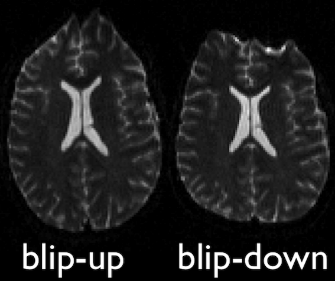

Preprocessing dMRI data
Last updated on 2024-02-18 | Edit this page
Estimated time: 30 minutes
Overview
Questions
- What are the standard preprocessing steps?
- How do we register with an anatomical image?
Objectives
- Understand the common preprocessing steps
- Learn to register diffusion data
Diffusion Preprocessing
Diffusion MRI data does not typically come off the scanner ready to
be analyzed, and there can be many things that might need to be
corrected before analysis. Diffusion preprocessing typically comprises
of a series of steps to perform the necessary corrections to the data.
These steps may vary depending on how the data is acquired. Some
consensus has been reached for certain preprocessing steps, while others
are still up for debate. The lesson will primarily focus on the
preprocessing steps where consensus has been reached. Preprocessing is
performed using a few well-known software packages (e.g. FSL, ANTs. For the purposes of these
lessons, preprocessing steps requiring these software packages has
already been performed for the dataset ds000221 and the
commands required for each step will be provided. This dataset contains
single shell diffusion data with 7 \(b = 0
s/mm^2\) volumes (non-diffusion weighted) and 60 \(b = 1000 s/mm^2\) volumes. In addition,
field maps (found in the fmap directory are acquired with
opposite phase-encoding directions).
To illustrate what the preprocessing step may look like, here is an
example preprocessing workflow from QSIPrep (Cieslak et al,
2020): 
dMRI has some similar challenges to fMRI preprocessing, as well as some unique ones.
Our preprocesssing of this data will consist of following steps:
- Brainmasking the diffusion data.
- Applying
FSLtopupto correct for susceptibility induced distortions. -
FSLEddy current distortion correction. - Registration to T1w.
The same subject (sub-010006) will be used throughout
the remainder of the lesson.
Brainmasking
The first step to the preprocessing workflow is to create an appropriate brainmask from the diffusion data! Start by first importing the necessary modules and reading the diffusion data along with the coordinate system (the affine)! We will also grab the anatomical T1w image to use later on, as well as the second inversion from the anatomical acquisition for brainmasking purposes.
PYTHON
from bids.layout import BIDSLayout
layout = BIDSLayout("../../data/ds000221", validate=False)
subj='010006'
# Diffusion data
dwi = layout.get(subject=subj, suffix='dwi', extension='.nii.gz', return_type='file')[0]
# Anatomical data
t1w = layout.get(subject=subj, suffix='T1w', extension='.nii.gz', return_type='file')[0]PYTHON
import numpy as np
import nibabel as nib
dwi = nib.load(dwi)
dwi_affine = dwi.affine
dwi_data = dwi.get_fdata()DIPY’s segment.mask module will be used to
create a brainmask from this. This module contains a function
median_otsu, which can be used to segment the brain and
provide a binary brainmask! Here, a brainmask will be created using the
first non-diffusion volume of the data. We will save this brainmask to
be used in our later future preprocessing steps. After creating the
brainmask, we will start to correct for distortions in our images.
PYTHON
import os
from dipy.segment.mask import median_otsu
# vol_idx is a 1D-array containing the index of the first b0
dwi_brain, dwi_mask = median_otsu(dwi_data, vol_idx=[0])
# Create necessary folders to save mask
out_dir = f'../../data/ds000221/derivatives/uncorrected/sub-{subj}/ses-01/dwi/'
# Check to see if directory exists, if not create one
if not os.path.exists(out_dir):
os.makedirs(out_dir)
img = nib.Nifti1Image(dwi_mask.astype(np.float32), dwi_affine)
nib.save(img, os.path.join(out_dir, f"sub-{subj}_ses-01_brainmask.nii.gz"))
FSL topup
Diffusion images, typically acquired using spin-echo echo planar imaging (EPI), are sensitive to non-zero off-resonance fields. One source of these fields is from the susceptibility distribution of the subjects head, otherwise known as susceptibility-induced off-resonance field. This field is approximately constant for all acquired diffusion images. As such, for a set of diffusion volumes, the susceptibility-induced field will be consistent throughout. This is mainly a problem due to geometric mismatches with the anatomical images (e.g. T1w), which are typically unaffected by such distortions.
topup, part of the FSL library, estimates
and attempts to correct the susceptibility-induced off-resonance field
by using 2 (or more) acquisitions, where the acquisition parameters
differ such that the distortion differs. Typically, this is done using
two acquisitions acquired with opposite phase-encoding directions, which
results in the same field creating distortions in opposing
directions.

Opposite phase-encodings from two DWI
Here, we will make use of the two opposite phase-encoded acquisitions
found in the fmap directory of each subject. These are
acquired with a diffusion weighting of \(b = 0
s/mm^2\). Alternatively, if these are not available, one can also
extract and make use of the non-diffusion weighted images (assuming the
data is also acquired with opposite phase encoding directions).
First, we will merge the two files so that all of the volumes are in 1 file.
BASH
mkdir -p ../../data/ds000221/derivatives/uncorrected_topup/sub-010006/ses-01/dwi/work
fslmerge -t ../../data/ds000221/derivatives/uncorrected_topup/sub-010006/ses-01/dwi/work/sub-010006_ses-01_acq-SEfmapDWI_epi.nii.gz ../../data/ds000221/sub-010006/ses-01/fmap/sub-010006_ses-01_acq-SEfmapDWI_dir-AP_epi.nii.gz ../../data/ds000221/sub-010006/ses-01/fmap/sub-010006_ses-01_acq-SEfmapDWI_dir-PA_epi.nii.gzAnother file we will need to create is a text file containing the
information about how the volumes were acquired. Each line in this file
will pertain to a single volume in the merged file. The first 3 values
of each line refers to the acquisition direction, typically along the
y-axis (or anterior-posterior). The final value is the total readout
time (from center of first echo to center of final echo), which can be
determined from values contained within the associated JSON metadata
file (named “JSON sidecar file” within the BIDS specification). Each
line will look similar to [x y z TotalReadoutTime]. In this
case, the file, which we created, is contained within the
pedir.txt file in the derivative directory.
With these two inputs, the next step is to make the call to
topup to estimate the susceptibility-induced field. Within
the call, a few parameters are used. Briefly:
-
--imainspecifies the previously merged volume. -
--datainspecifies the text file containing the information regarding the acquisition. -
--config=b02b0.cnfmakes use of a predefined config file. supplied withtopup, which contains parameters useful to registering with good \(b = 0 s/mm^2\) images. -
--outdefines the output files containing the spline. coefficients for the induced field, as well as subject movement parameters.
BASH
topup --imain=../../data/ds000221/derivatives/topup/sub-010006/ses-01/dwi/work/sub-010006_ses-01_acq-SEfmapDWI_epi.nii.gz --datain=../../data/ds000221/derivatives/topup/sub-010006/ses-01/dwi/work/pedir.txt --config=b02b0.cnf --out=../../data/ds000221/derivatives/topup/sub-010006/ses-01/dwi/work/topupNext, we can apply the correction to the entire diffusion weighted
volume by using applytopup Similar to topup, a
few parameters are used. Briefly:
-
--imainspecifies the input diffusion weighted volume. -
--datainagain specifies the text file containing information regarding the acquisition - same file previously used. -
--inindexspecifies the index (comma separated list) of the input image to be corrected. -
--topupname of field/movements (from previous topup step. -
--outbasename for the corrected output image. -
--method(optional) jacobian modulation (jac) or least-squares resampling (lsr).
BASH
applytopup --imain=../../data/ds000221/sub-010006/ses-01/dwi/sub-010006_ses-01_dwi.nii.gz --datain=../../data/ds000221/derivatives/topup/sub-010006/ses-01/dwi/work/pedir.txt --inindex=1 --topup=../../data/ds000221/derivatives/topup/sub-010006/ses-01/dwi/work/topup --out=../../data/ds000221/derivatives/topup/sub-010006/ses-01/dwi/dwi --method=jac
FSL Eddy
Another source of the non-zero off resonance fields is caused by the rapid switching of diffusion weighting gradients, otherwise known as eddy current-induced off-resonance fields. Additionally, the subject is likely to move during the diffusion protocol, which may be lengthy.
eddy, also part of the FSL library,
attempts to correct for both eddy current-induced fields and subject
movement by reading the gradient table and estimating the distortion
volume by volume. This tool is also able to optionally detect and
replace outlier slices.
Here, we will demonstrate the application of eddy
following the topup correction step, by making use of both
the uncorrected diffusion data, as well as estimated warpfield from the
topup. Additionally, a text file, which maps each of the
volumes to one of the corresponding acquisition directions from the
pedir.txt file will have to be created. Finally, similar to
topup, there are also a number of input parameters which
have to be specified:
-
--imainspecifies the undistorted diffusion weighted volume. -
--maskspecifies the brainmask for the undistorted diffusion weighted volume. -
--acqpspecifies the the text file containing information regarding the acquisition that was previously used intopup. -
--indexis the text file which maps each diffusion volume to the corresponding acquisition direction. -
--bvecsspecifies the bvec file to the undistorted dwi. -
--bvalssimilarily specifies the bval file to the undistorted dwi. -
--topupspecifies the directory and distortion correction files previously estimated bytopup. -
--outspecifies the prefix of the output files following eddy correction. -
--repolis a flag, which specifies replacement of outliers.
BASH
mkdir -p ../../data/ds000221/derivatives/uncorrected_topup_eddy/sub-010006/ses-01/dwi/work
# Create an index file mapping the 67 volumes in 4D dwi volume to the pedir.txt file
indx=""
for i in `seq 1 67`; do
indx="$indx 1"
done
echo $indx > ../../data/ds000221/derivatives/uncorrected_topup_eddy/sub-010006/ses-01/dwi/work/index.txt
eddy --imain=../../data/ds000221/sub-010006/ses-01/dwi/sub-010006_ses-01_dwi.nii.gz --mask=../../data/ds000221/derivatives/uncorrected/sub-010006/ses-01/dwi/sub-010006_ses-01_brainmask.nii.gz --acqp=../../data/ds000221/derivatives/uncorrected_topup/sub-010006/ses-01/dwi/work/pedir.txt --index=../../data/ds000221/derivatives/uncorrected_topup_eddy/sub-010006/ses-01/dwi/work/index.txt --bvecs=../../data/ds000221/sub-010006/ses-01/dwi/sub-010006_ses-01_dwi.bvec --bvals=../../data/ds000221/sub-010006/ses-01/dwi/sub-010006_ses-01_dwi.bval --topup=../../data/ds000221/derivatives/uncorrected_topup/sub-010006/ses-01/dwi/work/topup --out=../../data/ds000221/derivatives/uncorrected_topup_eddy/sub-010006/ses-01/dwi/dwi --repolRegistration with T1w
The final step to our diffusion processing is registration to an anatomical image (e.g. T1-weighted). This is important because the diffusion data, typically acquired using echo planar imaging or EPI, enables faster acquisitions at the cost of lower resolution and introduction of distortions (as seen above). Registration with the anatomical image not only helps to correct for some distortions, it also provides us with a higher resolution, anatomical reference.
First, we will create a brainmask of the anatomical image using the
anatomical acquisition (e.g. T1-weighted). To do this, we will use
FSL bet twice. The first call to
bet will create a general skullstripped brain. Upon
inspection, we can note that there is still some residual areas of the
image which were included in the first pass. Calling bet a
second time, we get a better outline of the brain and brainmask, which
we can use for further processing.
BASH
mkdir -p ../../data/ds000221/derivatives/uncorrected/sub-010006/ses-01/anat
bet ../../data/ds000221/sub-010006/ses-01/anat/sub-010006_ses-01_inv-2_mp2rage.nii.gz ../../data/ds000221/derivatives/uncorrected/sub-010006/ses-01/anat/sub-010006_ses-01_space-T1w_broadbrain -f 0.6
bet ../../data/ds000221/derivatives/uncorrected/sub-010006/ses-01/anat/sub-010006_ses-01_space-T1w_broadbrain ../../data/ds000221/derivatives/uncorrected/sub-010006/ses-01/anat/sub-010006_ses-01_space-T1w_brain -f 0.4 -m
mv ../../data/ds000221/derivatives/uncorrected/sub-010006/ses-01/anat/sub-010006_ses-01_space-T1w_brain_mask.nii.gz ../../data/ds000221/derivatives/uncorrected/sub-010006/ses-01/anat/sub-010006_ses-01_space-T1w_brainmask.nii.gz
Note, we use bet here, as well as the second inversion
of the anatomical image, as it provides us with a better brainmask. The
bet command above is called to output only the binary mask
and the fractional intensity threshold is also increased slightly (to
0.6) provide a smaller outline of the brain initially, and then
decreased (to 0.4) to provide a larger outline. The flag -m
indicates to the tool to create a brainmask in addition to outputting
the extracted brain volume. Both the mask and brain volume will be used
in our registration step.
Before we get to the registration, we will also update our DWI
brainmask by performing a brain extraction using DIPY on
the eddy corrected image. Note that the output of eddy is
not in BIDS format so we will include the path to the diffusion data
manually. We will save both the brainmask and the extracted brain
volume. Additionally, we will save a separate volume of only the first
B0 to use for the registration.
PYTHON
from dipy.segment.mask import median_otsu
# Path of FSL eddy-corrected dwi
dwi = "../../data/ds000221/derivatives/uncorrected_topup_eddy/sub-010006/ses-01/dwi/dwi.nii.gz"
# Load eddy-corrected diffusion data
dwi = nib.load(dwi)
dwi_affine = dwi.affine
dwi_data = dwi.get_fdata()
dwi_brain, dwi_mask = median_otsu(dwi_data, vol_idx=[0])
dwi_b0 = dwi_brain[:,:,:,0]
# Output directory
out_dir="../../data/ds000221/derivatives/uncorrected_topup_eddy/sub-010006/ses-01/dwi"
# Save diffusion mask
img = nib.Nifti1Image(dwi_mask.astype(np.float32), dwi_affine)
nib.save(img, os.path.join(out_dir, "sub-010006_ses-01_dwi_proc-eddy_brainmask.nii.gz"))
# Save 4D diffusion volume
img = nib.Nifti1Image(dwi_brain, dwi_affine)
nib.save(img, os.path.join(out_dir, "sub-010006_ses-01_dwi_proc-eddy_brain.nii.gz"))
# Save b0 volume
img = nib.Nifti1Image(dwi_b0, dwi_affine)
nib.save(img, os.path.join(out_dir, "sub-010006_ses-01_dwi_proc-eddy_b0.nii.gz"))To perform the registration between the diffusion volumes and T1w, we
will make use of ANTs, specifically the
antsRegistrationSyNQuick.sh script and
antsApplyTransform. We will begin by registering the
diffusion \(b = 0 s/mm^2\) volume to
get the appropriate transforms to align the two images. We will then
apply the inverse transformation to the T1w volume such that it is
aligned to the diffusion volume.
Here, we will constrain antsRegistrationSyNQuick.sh to
perform a rigid and affine transformation (we will explain why in the
final step). There are a few parameters that must be set:
-
-d- Image dimension (2/3D). -
-t- Transformation type (aperforms only rigid + affine transformation). -
-f- Fixed image (anatomical T1w). -
-m- Moving image (B0 DWI volume). -
-o- Output prefix (prefix to be appended to output files).
BASH
mkdir -p ../../data/ds000221/derivatives/uncorrected_topup_eddy_regT1/sub-010006/ses-01/transforms
# Perform registration between b0 and T1w
antsRegistrationSyNQuick.sh -d 3 -t a -f ../../data/ds000221/derivatives/uncorrected/sub-010006/ses-01/anat/sub-010006_ses-01_space-T1w_brain.nii.gz -m ../../data/ds000221/derivatives/uncorrected_topup_eddy/sub-010006/ses-01/dwi/sub-010006_ses-01_dwi_proc-eddy_b0.nii.gz -o ../../data/ds000221/derivatives/uncorrected_topup_eddy_regT1/sub-010006/ses-01/transform/dwi_to_t1_The transformation file should be created which we will use to apply
the inverse transform with antsApplyTransform to the T1w
volume. Similar to the previous command, there are few parameters that
will need to be set:
-
-d- Image dimension (2/3/4D). -
-i- Input volume to be transformed (T1w). -
-r- Reference volume (B0 DWI volume). -
-t- Transformation file (can be called more than once). -
-o- Output volume in the transformed space.
Note that if more than 1 transformation file is provided, the order in which the transforms are applied to the volume is in reverse order of how it is inputted (e.g. last transform gets applied first).
BASH
# Apply transform to 4D DWI volume
antsApplyTransforms -d 3 -i ../../data/ds000221/derivatives/uncorrected/sub-010006/ses-01/anat/sub-010006_ses-01_space-T1w_brain.nii.gz -r ../../data/ds000221/derivatives/uncorrected_topup_eddy/sub-010006/ses-01/dwi/sub-010006_ses-01_dwi_proc-eddy_b0.nii.gz -t [../../data/ds000221/derivatives/uncorrected_topup_eddy_regT1/sub-010006/ses-01/transform/dwi_to_t1_0GenericAffine.mat,1] -o ../../data/ds000221/derivatives/uncorrected_topup_eddy_regT1/sub-010006/ses-01/anat/sub-010006_ses-01_space-dwi_T1w_brain.nii.gz
Following the transformation of the T1w volume, we can see that anatomical and diffusion weighted volumes are now aligned. It should be highlighted that as part of the transformation step, the T1w volume is resampled based on the voxel size of the reference volume (i.e. the B0 DWI volume in this case).
Preprocessing notes:
- In this lesson, the T1w volume is registered to the DWI volume. This
method minimizes the manipulation of the diffusion data. It is also
possible to register the DWI volume to the T1w volume and would require
the associated diffusion gradient vectors (bvec) to also be similarly
rotated. If this step is not performed, one would have incorrect
diffusion gradient directions relative to the registered DWI volumes.
This also highlights a reason behind not performing a non-linear
transformation for registration, as each individual diffusion gradient
direction would also have to be subsequently warped. Rotation of the
diffusion gradient vectors can be done by applying the affine
transformation to each row of the file. Luckily, there are existing
scripts that can do this. One such Python script was created by Michael
Paquette:
rot_bvecs_ants.py. - We have only demonstrated the preprocessing steps where there is general consensus on how DWI data should be processed. There are also additional steps with certain caveats, which include denoising, unringing (to remove/minimize effects of Gibbs ringing artifacts), and gradient non-linearity correction (to unwarp distortions caused by gradient-field inhomogeneities using a vendor acquired gradient coefficient file).
- Depending on how the data is acquired, certain steps may not be
possible. For example, if the data is not acquired in two directions,
topupmay not be possible (in this situation, distortion correction may be better handled by registering with a T1w anatomical image directly. - There are also a number of tools available for preprocessing. In
this lesson, we demonstrate some of the more commonly used tools
alongside
DIPY.
References
.. [Cieslak2020] M. Cieslak, PA. Cook, X. He, F-C. Yeh, T. Dhollander, et al, “QSIPrep: An integrative platform for preprocessing and reconstructing diffusion MRI”, https://doi.org/10.1101/2020.09.04.282269
Key Points
- Many different preprocessing pipelines, dependent on how data is acquired